Xây dựng bộ tài liệu ôn tập học phần Lập trình nâng cao
Trello, Google Meet, Drive, Docs
I. Giới thiệu đề tài và mục tiêu thực hiện
Đề tài nhóm em lựa chọn là xây dựng bộ tài liệu ôn tập chất lượng cao cho học phần Lập trình nâng cao (Java OOP). Bộ tài liệu được thiết kế nhằm hệ thống hóa lại các kiến thức lý thuyết trọng tâm, cung cấp các ví dụ mã nguồn thực tế và xây dựng bộ câu hỏi ôn tập nhằm hỗ trợ sinh viên chuẩn bị thi cuối kỳ.
Trong phạm vi bài tập thực hành này, em đóng vai trò tổ chức, thiết lập hệ thống làm việc số, phân chia công việc và tham gia biên soạn nội dung. Báo cáo này tập trung ghi nhận chi tiết nhật ký 7 ngày sử dụng công cụ và đánh giá mức độ hiệu quả phối hợp trực tuyến.
II. Các công cụ sử dụng và công dụng của từng công cụ
| Nhóm công cụ | Công cụ chọn | Công dụng thực tế trong dự án |
|---|---|---|
| Quản lý dự án | Trello | Thiết lập Kanban Board: Phân công nhiệm vụ, đặt hạn hoàn thành (deadline), cập nhật trạng thái (To do, Doing, Review, Done). |
| Giao tiếp nhóm | Google Meet | Họp trực tuyến, thảo luận đề cương, chia sẻ màn hình để đóng góp ý kiến và rà soát tài liệu trực quan. |
| Lưu trữ & chia sẻ tệp | Google Drive | Lưu trữ tập trung các tài nguyên hình ảnh minh chứng, file code nháp và tài liệu bản cuối, phân quyền thư mục rõ ràng. |
| Soạn thảo cộng tác | Google Docs | Đồng soạn thảo trực tuyến nội dung lý thuyết, sử dụng tính năng bình luận (comment) để góp ý không làm hỏng cấu trúc file. |
III. Phân công nội dung và sản phẩm đầu ra
Tài liệu ôn tập được cấu trúc thành 5 phần chuyên đề:
- Phần 1: Lập trình hướng đối tượng nâng cao (Kế thừa, Đa hình, Trừu tượng, Đóng gói).
- Phần 2: Xử lý ngoại lệ (Exception Handling) và kỹ năng debug cơ bản.
- Phần 3: Generic, Collection API và các cấu trúc dữ liệu thông dụng trong Java.
- Phần 4: Làm việc với File I/O và xử lý luồng dữ liệu.
- Phần 5: Hệ thống câu hỏi ôn tập, đáp án gợi ý và bài tập thực hành tổng hợp.
IV. Nhật ký thực hiện theo từng ngày
Ngày 1 – Khởi động dự án và thiết lập công cụ số
Xác định đề tài, tạo Kanban Board trên Trello với các cột công việc tiêu chuẩn.
Khởi tạo thư mục Google Drive dùng chung chia cấp rõ ràng: 01_Kế hoạch, 02_Nội dung, 03_Minh chứng, 04_Bản hoàn chỉnh.
Tạo file Google Docs khung xương ban đầu.
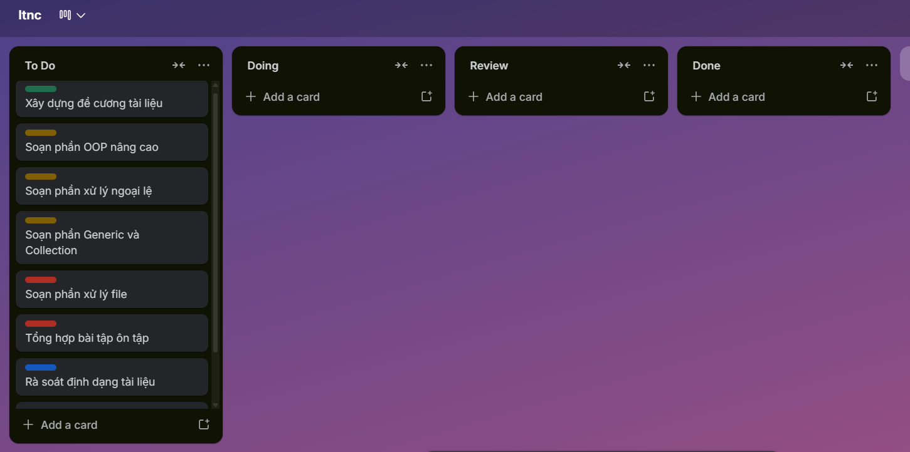
Hình 4.1: Bảng Trello Kanban khởi tạo
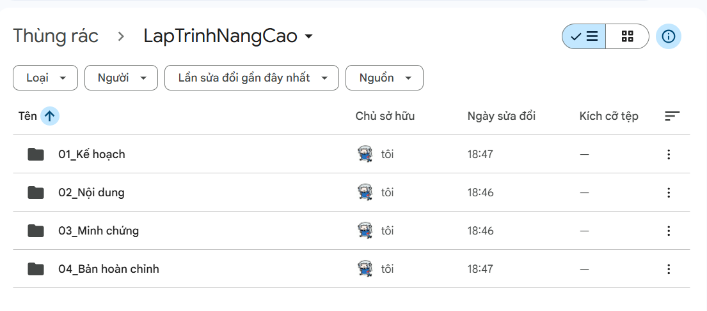
Hình 4.2: Cấu trúc thư mục Google Drive
Ngày 2 – Lập kế hoạch chi tiết và phân công
Phân chia thời hạn hoàn thành rõ ràng trên Trello, gắn checklist cho từng thẻ công việc.
Thống nhất quy tắc đặt tên file trong thư mục: ChuyenDe[X]_HoTen.docx.
Bổ sung đề mục chi tiết trong file Docs chung.
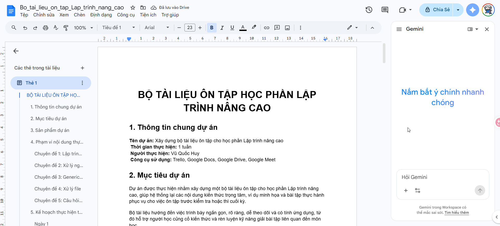
Hình 4.3: Hạn hoàn thành & checklist trên Trello
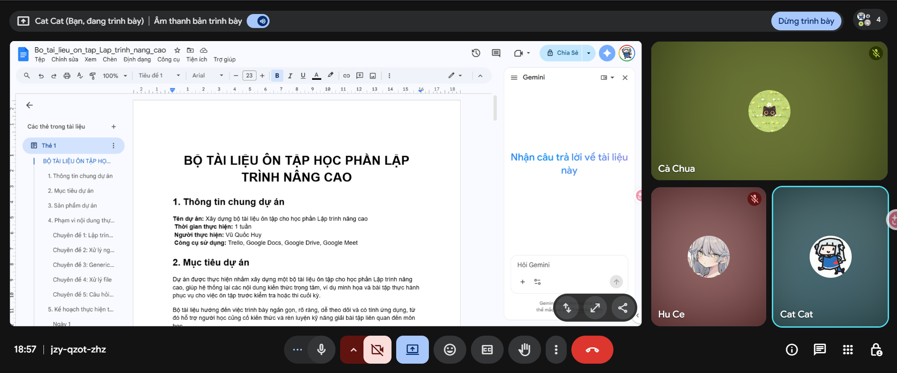
Hình 4.4: Tạo khung sườn Google Docs
Ngày 3 – Soạn thảo nội dung chuyên đề 1 và 2
Bắt đầu tự viết nội dung lý thuyết OOP Java và xử lý ngoại lệ. Viết ví dụ mã nguồn minh họa ngắn gọn, chèn chú thích. Sử dụng tính năng comment của Google Docs để đánh dấu các điểm cần thảo luận lại với nhóm.
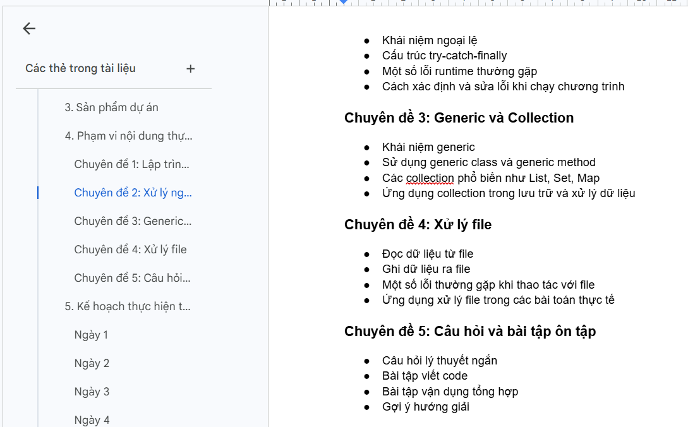
Hình 4.5: Soạn thảo mã nguồn Java
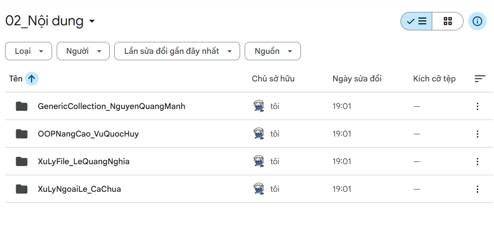
Hình 4.6: Sử dụng comment để góp ý nội dung
Ngày 4 – Hoàn thiện ví dụ, câu hỏi và lưu trữ
Viết tiếp bộ câu hỏi ôn tập tự luận cho Chương 1 và 2.
Lưu trữ các file code test lên thư mục Drive tương ứng.
Cập nhật trạng thái các thẻ Trello sang cột Review.

Hình 4.7: Lưu trữ tệp tin khoa học trên Drive
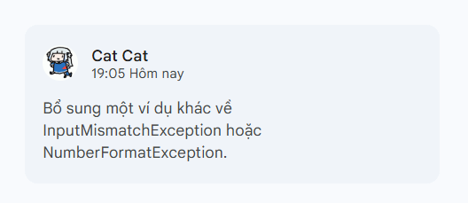
Hình 4.8: Chuyển thẻ công việc sang Review
Ngày 5 – Họp rà soát chất lượng qua Google Meet
Tổ chức họp nhóm qua Google Meet, chia sẻ màn hình để cùng duyệt lại file Docs. Sửa các lỗi chính tả, lỗi định dạng font chữ và tối ưu hóa các ví dụ code chưa rõ ràng.
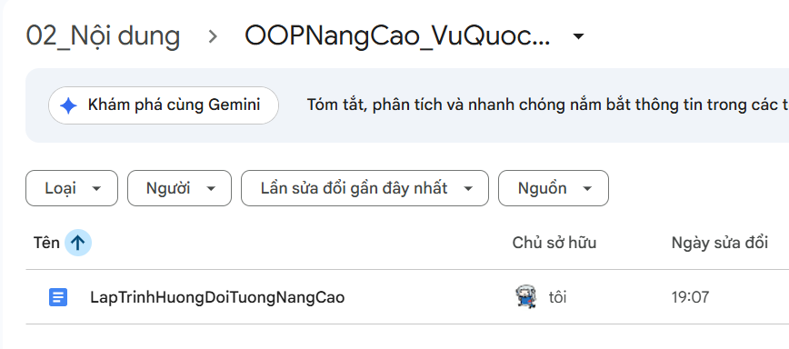
Hình 4.9: Buổi họp nhóm trực tuyến
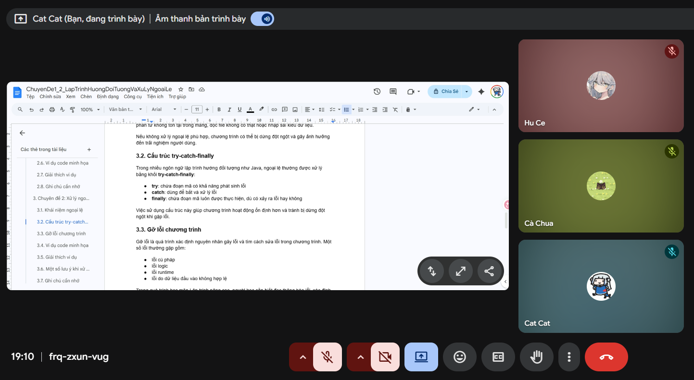
Hình 4.10: Chia sẻ màn hình để rà soát lỗi
Ngày 6 – Tổng hợp, định dạng & chuẩn hóa
Tiến hành canh chỉnh lại lề, thống nhất font chữ Inter cho nội dung và Courier New/Monospace cho các khối mã nguồn.
Đưa các thẻ Trello đã xong sang cột Done.
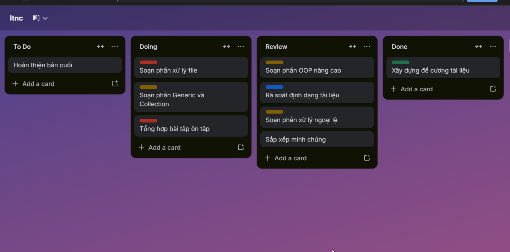
Hình 4.11: Định dạng canh chỉnh lề
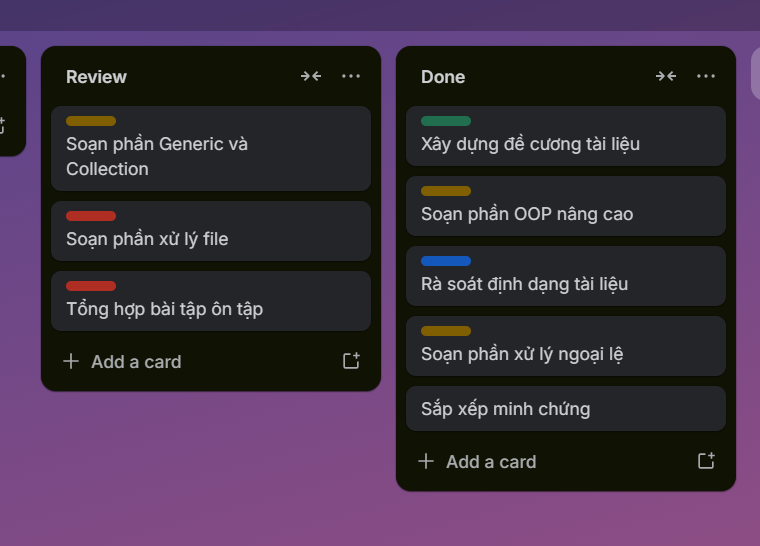
Hình 4.12: Cột Done trên Trello hoàn tất
Ngày 7 – Kiểm tra cuối và xuất bản tài liệu
Xuất tệp tin dưới dạng PDF để nộp làm minh chứng sản phẩm học phần. Kiểm tra kỹ các liên kết thư mục đảm bảo phân quyền công khai cho người chấm.
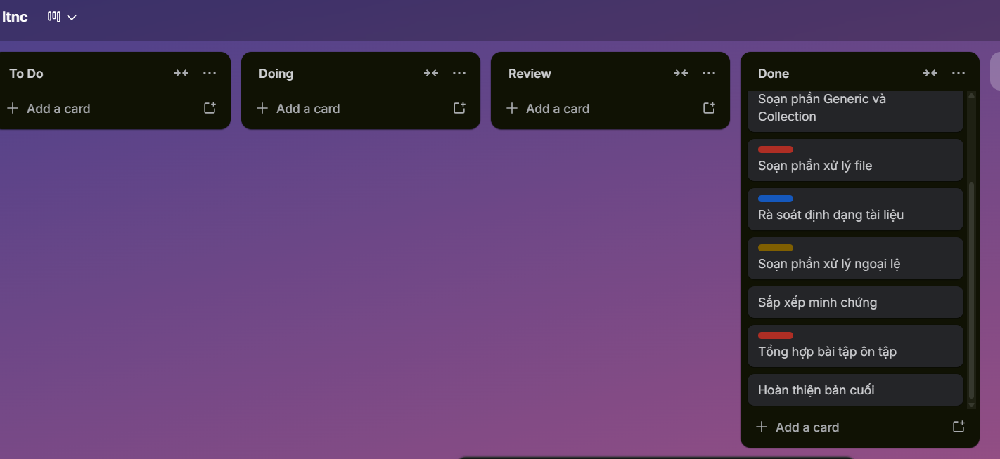
Hình 4.13: File PDF hoàn chỉnh được lưu trên Drive
V. Đánh giá hiệu quả, thách thức và cách khắc phục của từng công cụ
1. Trello (Quản lý tiến độ)
- Hiệu quả: Giao diện kéo thả trực quan giúp dễ dàng kiểm soát khối lượng công việc, không bị quên nhiệm vụ.
- Thách thức: Nếu các thành viên không tự giác cập nhật trạng thái thẻ hằng ngày, bảng Trello sẽ mất giá trị theo dõi.
- Khắc phục: Quy định dành 5 phút cuối ngày để rà soát và cập nhật thẻ.
2. Google Meet (Giao tiếp nhóm)
- Hiệu quả: Trao đổi trực tiếp, tính năng chia sẻ màn hình giúp giải quyết nhanh các tranh luận về nội dung code.
- Thách thức: Tín hiệu đường truyền đôi khi không ổn định, cuộc họp dễ bị lan man nếu không có chương trình họp (agenda) trước.
- Khắc phục: Lập sẵn danh sách các điểm cần thống nhất trước buổi họp; ghi chú kết luận gửi lại sau họp.
3. Google Drive (Lưu trữ tài nguyên)
- Hiệu quả: Lưu trữ dữ liệu tập trung, phân quyền truy cập chi tiết (chỉ xem hoặc chỉnh sửa) rất an toàn.
- Thách thức: Nếu không tuân thủ quy tắc đặt tên, các phiên bản file nháp sẽ bị lẫn lộn rất khó tìm.
- Khắc phục: Quy định chặt chẽ cấu trúc đặt tên ngay từ ngày đầu tiên.
4. Google Docs (Soạn thảo cộng tác)
- Hiệu quả: Đồng soạn thảo thời gian thực xuất sắc, tự động lưu trữ, tính năng comment và phân quyền cực tốt.
- Thách thức: Việc nhiều người gõ đồng thời dễ dẫn đến xung đột định dạng (format) dòng kẻ hoặc font chữ.
- Khắc phục: Định hình mẫu (style template) chuẩn trước khi viết; chỉ sử dụng tính năng đề xuất (Suggesting mode) khi chỉnh sửa chéo.
VI. Kết luận
Việc ứng dụng bộ công cụ hợp tác số trực tuyến giúp quy trình phối hợp làm việc nhóm trở nên chuyên nghiệp, rõ ràng và có hệ thống hơn rất nhiều so với cách nhắn tin qua mạng xã hội truyền thống. Mặc dù gặp một số rào cản cơ học về đường truyền hay quản lý định dạng, việc đặt ra quy chế làm việc nhóm cụ thể ngay từ đầu đã giúp nhóm hoàn thành sản phẩm đúng tiến độ với chất lượng cao nhất.